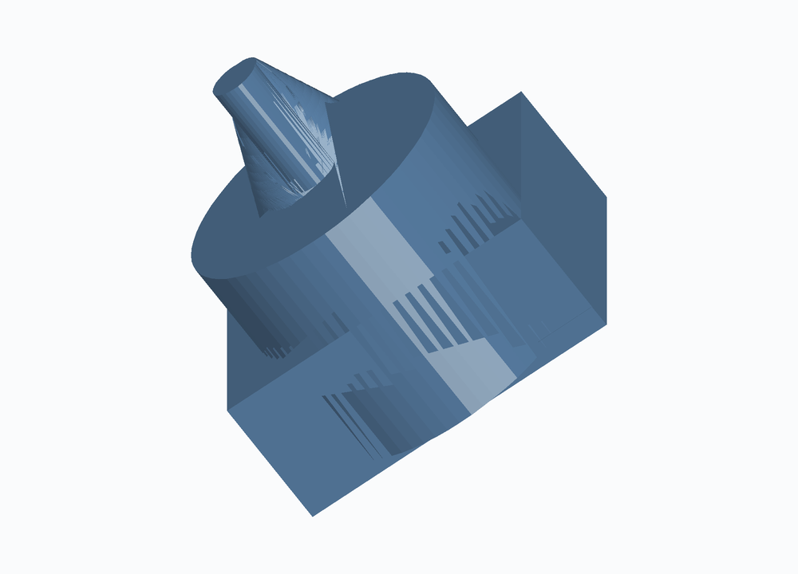

7B6AB753…，签署日期 2026-11-24；本方签署待完成）客户真实件（授权来源：黑龙江省德科精密机电设备有限公司）。判定对象 11.STEP；本例只展示结论与截图，原始 STEP 不提供下载。

图为 11.STEP 导出的 STL 光栅渲染示意，不是 CAD 截图；原始 STEP 与 STL 均不对外提供。
| 文件名 | 11.STEP |
|---|---|
| 字节数 | 213,233 B（0.20 MB） |
| SHA256 | 95008F0C15DA592E2A4E91A217E4B804B32F776F7A443429EFCC0D1625B4CD3C |
| 格式 / 单位 | step / mm |
| 来源 | 黑龙江省德科精密机电设备有限公司提供（附件A 20 件之一），授权书 SHA256 7B6AB753… |
| 导入结果 | imported=True，format=step，length_unit=mm |
|---|---|
| 实体数 | solids=6 / shells=6 |
| 拓扑 | faces=81（平面 61 / 曲面 20）· edges=199 · vertices=132 |
| 有效性 | valid=True · closed=True · warning=1（STEP: normalized orientation of 4 curved face(s) in closed shells） |
| 包围盒 | 1750.0 × 1850.0 × 1450.0 mm（bbox=[-875.0000001000002, -2e-07, -725.0000001999999] … [875.0000001, 1850.0000002000002, 725.0000001999999]） |
| 体积 / 面积 | 未测量（import 快路径不测质量属性；判定只吃面/边/网格） |
| 规则 | 判定 | 内核消息 |
|---|---|---|
manufacturing/min_wall_thickness | reject | minimum wall thickness is below the required threshold |
manufacturing/hole_penetration | reject | a through hole opens into an internal cavity (break-through) |
manufacturing/draft_angle | 未判 | draft angle of curved faces needs the general draft analysis (not judged) |
manufacturing/sliver_face | 未判 | sliver ratio of curved faces needs face-area integration (not judged) |
quality/non_manifold | reject | topology validation reported 4 issue(s); first: face#46: loop vertex is far from the face surface (inconsistent geometry) |
assembly/interference | 未判 | assembly interference needs two non-empty bodies |
manufacturing/blade_thin_section | reject | thin curved section is below the required minimum thickness |
manufacturing/hole_depth_ratio | allow | hole depth-to-diameter ratios are within the threshold |
manufacturing/sharp_internal_corner | allow | all internal corners are wider than the sharp-corner threshold |
quality/small_feature | 未判 | smallest feature size lies inside the decision band |
manufacturing/undercut | reject | surface patches are blocked along both pull directions (undercut) |
manufacturing/min_hole_diameter | allow | all cylindrical hole diameters satisfy the threshold |
manufacturing/wall_thickness_uniformity | reject | wall thickness varies more than the uniformity threshold |
quality/stress_concentration_corner | 未判 | internal corner stress proxy or measurement lies inside the decision band |
manufacturing/missing_fillet | 未判 | edge transition or measurement lies inside the decision band |
manufacturing/bridge_span | reject | an unsupported ceiling span exceeds the span/thickness limit |
manufacturing/overhang_angle | reject | a downward face exceeds the maximum overhang angle (support needed) |
manufacturing/step_height_ratio | reject | a step/riser height exceeds the step-height ratio |
manufacturing/residual_wall | allow | residual wall around all holes satisfies the minimum |
quality/opening_radius | reject | a hole opening has no rounded/chamfered transition of the required size |
口径：cannot_judge 不是 allow——内核明确写 undecided（CLI policy 原文：undecided - NOT an allow; never treat as a pass）。
| 阶段 | 墙钟 |
|---|---:|
| import（解析 + 拓扑 + bbox） | 0.05 s |
| adjudicate（20 条规则） | 21.15 s |
| 合计（机器段） | 21.20 s |
min_wall_thickness、hole_penetration、non_manifold、blade_thin_section、undercut、wall_thickness_uniformity、bridge_span、overhang_angle、step_height_ratio、opening_radiusdraft_angle、sliver_face、interference、small_feature、stress_concentration_corner、missing_fillethole_depth_ratio、sharp_internal_corner、min_hole_diameter、residual_wall7B6AB753…，签署日期 2026-11-24；本方签署待完成）。.STEP 下载，也不提供导出的 STL/网格文件。7B6AB753…（完整值见 E:\ai-crew-assets\entity\authorizations\manifest.csv），签署日期 2026-11-24，本方签署待完成。